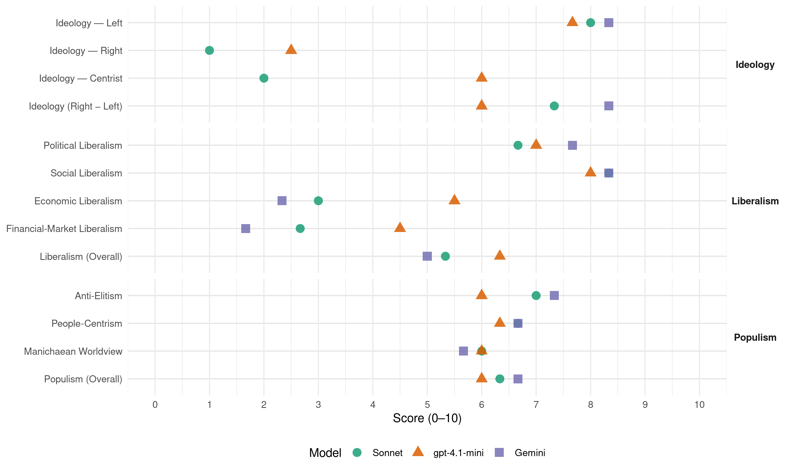

FA (Costa Rica, 2014)
manifesto_id 153322_201402
Get full text: This site shows derived annotations and short verbatim quotes only. The full manifesto text is © Manifesto Project / WZB — obtain it via manifesto-project.wzb.eu using the manifesto_id above.
Headline scores
| Dimension | Sonnet | gpt-4.1-mini | Gemini |
|---|---|---|---|
| Populism (Overall) | 6.3 | 6.0 | 6.7 |
| Anti-Elitism | 7.0 | 6.0 | 7.3 |
| People-Centrism | 6.7 | 6.3 | 6.7 |
| Manichaean Worldview | 6.0 | 6.0 | 5.7 |
| Ideology (Right − Left) | 7.3 | 6.0 | 8.3 |
| Liberalism (Overall) | 5.3 | 6.3 | 5.0 |
| Political Liberalism | 6.7 | 7.0 | 7.7 |
| Social Liberalism | 8.3 | 8.0 | 8.3 |
| Economic Liberalism | 3.0 | 5.5 | 2.3 |
| Financial-Market Liberalism | 2.7 | 4.5 | 1.7 |
Evidence per dimension
Economic Liberalism
Gemini · score 2.0 · verified · chunk 1
“sustitución por el modelo económico neoliberal”
Estado Social de Derecho establecido en nuestro país desde los años treinta del Siglo XX y su sustitución por el modelo económico neoliberal desde hace aproximadamente tres décadas.
Gemini · score 3.0 · verified · chunk 2
“detener la privatización de la generación”
Detener la privatización de la generación eléctrica ya que ésta, desde nuestro punto de vista, debe ser concebida como una actividad estratégica
Gemini · score 2.0 · verified · chunk 3
“implantación de las políticas neoliberales”
en Costa Rica, a raíz de la implantación de las políticas neoliberales, nuestros gobiernos optasen por relegar
gpt-4.1-mini · score 5.0 · mixed · chunk 1
“el modelo económico neoliberal … ha generado esa concentración de la riqueza”
Lo anterior tiene una explicación: se debe al desmantelamiento del modelo solidario de desarrollo del Estado Social de Derecho establecido en nuestro país desde los años treinta del Siglo XX y su sustitución por el modelo económico neoliberal desde hace aproximadamente tres décadas. El modelo neoliberal se ha caracterizado por una apertura comercial y de la cuenta de capitales que, si bien ha atraído Inversión Extranjera Directa, también ha debilitado la soberanía jurídica y ambiental del país, ha debilitado a las micro, pequeñas y medianas empresas … y ha generado esa concentración de la riqueza y de la pobreza en polos cada vez más extremos.
gpt-4.1-mini · score 6.0 · verified · chunk 2
“libre comercio”
Fortalecer los mecanismos de defensa comercial frente a las amenazas de los tratados de libre comercio, a través de medidas como: aplicar salvaguardas antidumping para enfrentar la competencia desleal de los países ricos; denunciar enérgicamente los millonarios subsidios que aplican a su agricultura dichas naciones; revisar, renegociar o denunciar cláusulas abusivas de tratados comerciales;
gpt-4.1-mini · score 5.0 · verified · chunk 3
“promover e impulsar el mercado interno. En este plan, jugarán un papel central las mipymes y los nuevos emprendimientos”
Con esta finalidad, nos proponemos armonizar las políticas monetaria y fiscal en función de promover la creación de empleo y promover e impulsar el mercado interno. En este plan, jugarán un papel central las mipymes y los nuevos emprendimientos que incorporen productivamente a las mujeres, la juventud, personas con discapacidad y personas desempleadas de largo tiempo y en edad adulta, a quienes se les dará especial atención.
Sonnet · score 3.0 · verified · chunk 1
“apertura comercial y de la cuenta de capitales”
El modelo neoliberal se ha caracterizado por una apertura comercial y de la cuenta de capitales que, si bien ha atraído Inversión Extranjera Directa, también ha debilitado la soberanía jurídica y ambiental del país
Sonnet · score 3.0 · verified · chunk 2
“privatizando la generación eléctrica”
el Frente Amplio no cree que privatizando la generación eléctrica se logren las condiciones de seguridad energética que el país requiere
Sonnet · score 4.0 · mixed · chunk 3
“reforma tributaria de carácter progresivo”
Todo ello acompañado de una reforma tributaria de carácter progresivo, que amplíe la base tributaria y aumente la carga a los sectores que acumulan la mayor parte de la riqueza nacional
Financial-Market Liberalism
Gemini · score 1.0 · verified · chunk 1
“bancos comerciales debe ascender al 35%-40%”
El impuesto sobre las rentas a los bancos comerciales debe ascender al 35%-40%.
Gemini · score 2.0 · verified · chunk 2
“banca para el desarrollo especializada”
Crear una verdadera banca para el desarrollo especializada en el sector agropecuario, mediante la constitución de fondos especiales sujetos a reglas más flexibles
Gemini · score 2.0 · verified · chunk 3
“controles más eficaces sobre el ingreso”
capitales de corto plazo, a fin de aplicar controles más eficaces sobre el ingreso masivo de capitales especulativos
gpt-4.1-mini · score 4.0 · mixed · chunk 1
“los bancos privados domiciliados en Costa Rica reportaron activos fuera del país”
solo en 1999, los bancos privados domiciliados en Costa Rica reportaron activos fuera del país (banca offshore) entre los $750 millones y los $1.350 millones, sobre los cuales, no pagaron impuestos El propio presidente del Consejo Nacional de Supervisión del Sistema Financiero (CONASSIF), reconoció en 2010, que la banca offshore llegó a acumular –para la década de los 80 del siglo pasado- unos US$1.000 millones
gpt-4.1-mini · score 5.0 · verified · chunk 2
“transparencia”
Garantizar que los recursos generados por el aumento de los ingresos, por el cobro justo de las licencias, se destinarán a la creación de un fondo para financiar la compra de embarcaciones para su arrendamiento, con opción de compra, a cooperativas integradas por personas desempleadas o pobres que se dedican a la pesca en las comunidades costeras.
gpt-4.1-mini · score 4.0 · verified · chunk 3
“valorar la aplicación de medidas como la diferenciación de los encajes mínimos según el tipo de moneda”
Además, valorar la aplicación de medidas como la diferenciación de los encajes mínimos según el tipo de moneda, así como la aplicación de encajes especiales de carácter temporal a los préstamos de origen extranjero o encajes a los depósitos en moneda local y cuyos titulares no sean residentes, con la finalidad de prevenir el uso de testaferros.
Sonnet · score 2.0 · verified · chunk 1
“Establecer la Tasa Tobin del 0,05%”
Establecer la Tasa Tobin del 0,05% aplicable al intercambio de acciones, bonos, derivados financieros, operaciones en divisas o de materias primas (commodities)
Sonnet · score 3.0 · verified · chunk 2
“el dinero que hoy los bancos públicos prestan con criterios únicamente comerciales”
El dinero que hoy los bancos públicos prestan con criterios únicamente comerciales para la adquisición de viviendas, debe ser redireccionado a la construcción de viviendas accesibles
Sonnet · score 3.0 · verified · chunk 3
“controles más eficaces sobre el ingreso masivo de capitales especulativos”
debe fortalecerse la capacidad del Banco Central para identificar oportunamente la llegada de capitales de corto plazo, a fin de aplicar controles más eficaces sobre el ingreso masivo de capitales especulativos
Political Liberalism
Gemini · score 8.0 · verified · chunk 1
“fortalecimiento de nuestro sistema democrático”
El fortalecimiento de nuestro sistema democrático va mucho más allá de las reformas a al marco legal electoral.
Gemini · score 7.0 · verified · chunk 2
“fortalecimiento de la institucionalidad democrática”
Los cuerpos policiales al servicio del fortalecimiento de la institucionalidad democrática y del Estado Social de Derecho.
Gemini · score 8.0 · verified · chunk 3
“respeto a la libertad de prensa”
de la población. Promover y garantizar el respeto a la libertad de prensa, incluyendo la protección de los
gpt-4.1-mini · score 7.0 · verified · chunk 1
“la democracia entendida como la participación central de las comunidades en la toma de decisiones”
La democracia entendida como la participación central de las comunidades en la toma de decisiones, la determinación de los presupuestos, la planificación y la formulación de las políticas públicas.
gpt-4.1-mini · score 7.0 · verified · chunk 2
“democracia del siglo XXI”
el reconocimiento de la interculturalidad es el pilar de la democracia del siglo XXI en este país.
gpt-4.1-mini · score 7.0 · verified · chunk 3
“promover a través del diálogo y la negociación mejoras en el régimen de empleo público que beneficien a todas las partes”
Respetar sus derechos laborales. Promover a través del diálogo y la negociación mejoras en el régimen de empleo público que beneficien a todas las partes. Impulsar que nuevos incentivos estén asociados a mejoras en la prestación de los servicios a las personas usuarias.
Sonnet · score 7.0 · verified · chunk 1
“el poder del pueblo, el poder de alcanzar una vida más digna”
Un gobierno que haga realidad ese principio de la democracia entendida como el poder del pueblo, el poder de alcanzar una vida más digna y feliz
Sonnet · score 6.0 · verified · chunk 2
“fortalecimiento de la institucionalidad democrática”
Los cuerpos policiales al servicio del fortalecimiento de la institucionalidad democrática y del Estado Social de Derecho.
Sonnet · score 7.0 · verified · chunk 3
“respeto irrestricto a los derechos humanos”
Un gobierno progresista debe estar regido en todo momento por el respeto irrestricto a los derechos humanos, rechazando toda forma de discriminación contraria a la dignidad humana
Liberalism (Overall)
Gemini · score 5.0 · verified · chunk 1
“fortalecimiento de nuestro sistema democrático”
El fortalecimiento de nuestro sistema democrático va mucho más allá de las reformas a al marco legal electoral.
Gemini · score 5.0 · verified · chunk 2
“fortalecimiento de la institucionalidad democrática”
Los cuerpos policiales al servicio del fortalecimiento de la institucionalidad democrática y del Estado Social de Derecho.
Gemini · score 5.0 · verified · chunk 3
“respeto irrestricto a los derechos humanos”
debe estar regido en todo momento por el respeto irrestricto a los derechos humanos,. rechazando toda forma de
gpt-4.1-mini · score 6.0 · verified · chunk 1
“la democracia entendida como la participación central de las comunidades en la toma de decisiones”
La democracia entendida como la participación central de las comunidades en la toma de decisiones, la determinación de los presupuestos, la planificación y la formulación de las políticas públicas.
gpt-4.1-mini · score 7.0 · verified · chunk 2
“democracia del siglo XXI”
el reconocimiento de la interculturalidad es el pilar de la democracia del siglo XXI en este país.
gpt-4.1-mini · score 6.0 · verified · chunk 3
“promover a través del diálogo y la negociación mejoras en el régimen de empleo público que beneficien a todas las partes”
Respetar sus derechos laborales. Promover a través del diálogo y la negociación mejoras en el régimen de empleo público que beneficien a todas las partes. Impulsar que nuevos incentivos estén asociados a mejoras en la prestación de los servicios a las personas usuarias.
Sonnet · score 5.0 · verified · chunk 1
“democracia entendida como el poder del pueblo”
Un gobierno que haga realidad ese principio de la democracia entendida como el poder del pueblo, el poder de alcanzar una vida más digna y feliz
Sonnet · score 5.0 · verified · chunk 2
“Estado Social de Derecho”
Los cuerpos policiales al servicio del fortalecimiento de la institucionalidad democrática y del Estado Social de Derecho.
Sonnet · score 6.0 · verified · chunk 3
“respeto irrestricto a los derechos humanos”
Un gobierno progresista debe estar regido en todo momento por el respeto irrestricto a los derechos humanos, rechazando toda forma de discriminación contraria a la dignidad humana
Anti-Elitism
Gemini · score 8.0 · verified · chunk 1
“sectores políticos envilecidos que lucran”
Como consecuencia de esto, hay sectores políticos envilecidos que lucran personalmente o como grupos e inclusive como partidos
Gemini · score 7.0 · verified · chunk 2
“los gobiernos neoliberales, más que brindar”
Sin embargo, los gobiernos neoliberales, más que brindar una verdadera protección a sus riquezas naturales, las visualizan como cajas recaudadoras
Gemini · score 7.0 · verified · chunk 3
“los partidos tradicionales han menospreciado”
sobre el futuro del país. Los partidos tradicionales han menospreciado su capacidad de participar activamente
gpt-4.1-mini · score 9.0 · verified · chunk 1
“la corrupción, más que una anomalía del sistema, ha pasado a convertirse en el sistema mismo”
Es poner al Estado al servicio de ciertos grupos, como si Costa Rica fuera una finca particular. Vivimos, así, tiempos en que la corrupción, más que una anomalía del sistema, ha pasado a convertirse en el sistema mismo; en algo que algunos incluso la consideran como el “aceite” necesario para que funcionen los engranajes del sistema.
gpt-4.1-mini · score 6.0 · verified · chunk 2
“los grupos en el poder”
Costa Rica ha sido privilegiada por la naturaleza ya que contamos con abundante disponibilidad de agua, a pesar de lo reducido del territorio, por lo que por mucho tiempo hemos creído, tanto los grupos en el poder como la gente de la “calle” que el agua es un recurso infinito.
gpt-4.1-mini · score 3.0 · verified · chunk 3
“la economía tiene que desarrollarse en función del bienestar de las personas y no prioritariamente de las ganancias del capital”
En el Frente Amplio pensamos que la economía tiene que desarrollarse en función del bienestar de las personas y no prioritariamente de las ganancias del capital. Tiene que haber mayor justicia económica, con desarrollo, con éxito para el sector productivo, pero también para las personas trabajadoras.
Sonnet · score 9.0 · verified · chunk 1
“los ganadores del modelo, sin lugar a dudas arrastran una importante deuda social y moral”
Por ello, los ganadores del modelo, sin lugar a dudas arrastran una importante deuda social y moral con el país y, como mínimo, deberían retribuir a la sociedad costarricense parte de lo que han acumulado
Sonnet · score 6.0 · verified · chunk 2
“los gobiernos neoliberales, más que brindar una verdadera protección”
Sin embargo, los gobiernos neoliberales, más que brindar una verdadera protección a sus riquezas naturales, las visualizan como cajas recaudadoras
Sonnet · score 6.0 · verified · chunk 3
“la acumulación de capital de ciertos grupos empresariales”
política exterior costarricense se ha visto reducida a una agenda funcional de la satisfacción de los intereses y la acumulación de capital de ciertos grupos empresariales y de servicios vinculados al Ministerio de Comercio Exterior
Ideology — Centrist
gpt-4.1-mini · score 7.0 · verified · chunk 1
“un gobierno que haga política con las mujeres y los hombres es condición indispensable”
Un gobierno que haga política con las mujeres y los hombres es condición indispensable para que nuestro pueblo pueda recuperar la esperanza, el aprecio por lo público (lo que es de todas y todos) y el optimismo de que las cosas puedan llegar a ser mejores en nuestra Patria.
gpt-4.1-mini · score 6.0 · verified · chunk 2
“participación de las comunidades”
Garantizar la participación de las y los habitantes y las comunidades locales en todas las instancias de planificación y gestión del agua, por lo que apoyaremos la legislación que asegure la participación real y efectiva de las comunidades en la toma de decisiones sobre planes de ordenamiento y en la definición de prioridades sobre el uso del agua.
gpt-4.1-mini · score 5.0 · verified · chunk 3
“un gobierno progresista debe estar regido en todo momento por el respeto irrestricto a los derechos humanos”
Un gobierno progresista debe estar regido en todo momento por el respeto irrestricto a los derechos humanos, rechazando toda forma de discriminación contraria a la dignidad humana. Esto incluye combatir la discriminación por orientación sexual, que hoy sufren miles de personas gays, lesbianas, intersexuales, bisexuales, transgénero y transexuales.
Sonnet · score 2.0 · verified · chunk 1
“un gobierno de tipo progresista que busque el bien común”
el Frente Amplio propone al país un conjunto de medidas para establecer un gobierno de tipo progresista que busque el bien común en Costa Rica
Sonnet · score 2.0 · verified · chunk 2
“Rechazo rotundo al populismo penal”
Se revertirán reformas orientadas a imponer penas excesivas de prisión para delitos menores. Rechazo rotundo al populismo penal.
Sonnet · score 2.0 · verified · chunk 3
“bien común y el bienestar de las mayorías”
Cualquier país que se precie de tener como prioridad el bien común y el bienestar de las mayorías
Ideology — Left
Gemini · score 9.0 · verified · chunk 1
“acumulación de capital en manos de sectores privilegiados”
Son la consecuencia, como se dijo, de un determinado conjunto de políticas orientadas a la acumulación de capital en manos de sectores privilegiados.
Gemini · score 8.0 · verified · chunk 2
“justa distribución de la riqueza”
Justa distribución de la riqueza: Pretendemos que la riqueza generada por esa sociedad ecosuficiente y ecoeficiente, sea distribuida de forma justa
Gemini · score 8.0 · verified · chunk 3
“ganancias del capital. Tiene que”
bienestar de las personas y no prioritariamente de las ganancias del capital. Tiene que haber mayor justicia económica
gpt-4.1-mini · score 9.0 · verified · chunk 1
“reforma tributaria progresiva”
4. QUE LOS SECTORES DE MAYORES INGRESOS APORTEN MÁS: UNA REFORMA TRIBUTARIA PROGRESIVA La reducción del déficit fiscal no puede considerarse un fin en sí mismo. La estabilidad macroeconómica es, por el contrario, un medio para garantizar una institucionalidad sólida y con recursos que pueda brindar bienestar y redistribuir la riqueza en beneficio de los sectores más empobrecidos.
gpt-4.1-mini · score 7.0 · verified · chunk 2
“justa distribución de la riqueza”
La sociedad que anhelamos construir y por la que luchamos se caracteriza por: Ecosuficiencia… Justa distribución de la riqueza: Pretendemos que la riqueza generada por esa sociedad ecosuficiente y ecoeficiente, sea distribuida de forma justa a través de modelos productivos solidarios basados fundamentalmente en la economía social y el comercio justo.
gpt-4.1-mini · score 7.0 · verified · chunk 3
“una reforma tributaria de carácter progresivo, que amplíe la base tributaria y aumente la carga a los sectores que acumulan la mayor parte de la riqueza nacional”
El gobierno del Frente Amplio fundamentará su política tributaria y de gasto público en los principios de la transparencia absoluta y la eliminación del gasto superfluo. Todo ello acompañado de una reforma tributaria de carácter progresivo, que amplíe la base tributaria y aumente la carga a los sectores que acumulan la mayor parte de la riqueza nacional, permitiendo que esta sea reintegrada a quienes la producen día a día en los centros de trabajo y en los campos de nuestro país.
Sonnet · score 9.0 · verified · chunk 1
“la banca privada creada por el modelo”
Los ganadores del modelo son sectores que se han enriquecido al convertirse en intermediarios de la apertura –la banca privada creada por el modelo, los bufetes de abogados que se especializan en orientar a las empresas transnacionales
Sonnet · score 8.0 · verified · chunk 2
“Justa distribución de la riqueza”
Justa distribución de la riqueza: Pretendemos que la riqueza generada por esa sociedad ecosuficiente y ecoeficiente, sea distribuida de forma justa
Sonnet · score 7.0 · verified · chunk 3
“reforma tributaria de carácter progresivo”
Todo ello acompañado de una reforma tributaria de carácter progresivo, que amplíe la base tributaria y aumente la carga a los sectores que acumulan la mayor parte de la riqueza nacional
Ideology (Right − Left)
Gemini · score 9.0 · verified · chunk 1
“acumulación de capital en manos de sectores privilegiados”
Son la consecuencia, como se dijo, de un determinado conjunto de políticas orientadas a la acumulación de capital en manos de sectores privilegiados.
Gemini · score 8.0 · verified · chunk 2
“justa distribución de la riqueza”
Justa distribución de la riqueza: Pretendemos que la riqueza generada por esa sociedad ecosuficiente y ecoeficiente, sea distribuida de forma justa
Gemini · score 8.0 · verified · chunk 3
“ganancias del capital. Tiene que”
bienestar de las personas y no prioritariamente de las ganancias del capital. Tiene que haber mayor justicia económica
gpt-4.1-mini · score 7.0 · verified · chunk 1
“la corrupción, más que una anomalía del sistema, ha pasado a convertirse en el sistema mismo”
Es poner al Estado al servicio de ciertos grupos, como si Costa Rica fuera una finca particular. Vivimos, así, tiempos en que la corrupción, más que una anomalía del sistema, ha pasado a convertirse en el sistema mismo; en algo que algunos incluso la consideran como el “aceite” necesario para que funcionen los engranajes del sistema.
gpt-4.1-mini · score 6.0 · verified · chunk 2
“justa distribución de la riqueza”
La sociedad que anhelamos construir y por la que luchamos se caracteriza por: Ecosuficiencia… Justa distribución de la riqueza: Pretendemos que la riqueza generada por esa sociedad ecosuficiente y ecoeficiente, sea distribuida de forma justa a través de modelos productivos solidarios basados fundamentalmente en la economía social y el comercio justo.
gpt-4.1-mini · score 5.0 · verified · chunk 3
“una reforma tributaria de carácter progresivo, que amplíe la base tributaria y aumente la carga a los sectores que acumulan la mayor parte de la riqueza nacional”
El gobierno del Frente Amplio fundamentará su política tributaria y de gasto público en los principios de la transparencia absoluta y la eliminación del gasto superfluo. Todo ello acompañado de una reforma tributaria de carácter progresivo, que amplíe la base tributaria y aumente la carga a los sectores que acumulan la mayor parte de la riqueza nacional, permitiendo que esta sea reintegrada a quienes la producen día a día en los centros de trabajo y en los campos de nuestro país.
Sonnet · score 9.0 · verified · chunk 1
“desmantelamiento del modelo solidario de desarrollo del Estado Social de Derecho”
se debe al desmantelamiento del modelo solidario de desarrollo del Estado Social de Derecho establecido en nuestro país desde los años treinta del Siglo XX y su sustitución por el modelo económico neoliberal
Sonnet · score 7.0 · verified · chunk 2
“economía social y el comercio justo”
modelos productivos solidarios basados fundamentalmente en la economía social y el comercio justo. Es decir, un modelo de desarrollo verdaderamente sustentable
Sonnet · score 6.0 · verified · chunk 3
“ganancias del capital”
la economía tiene que desarrollarse en función del bienestar de las personas y no prioritariamente de las ganancias del capital
Ideology — Right
gpt-4.1-mini · score 3.0 · verified · chunk 2
“proteger a quienes habitan en la zona marítimo-terrestre”
Proteger a quienes habitan en la zona marítimo-terrestre frente a los desalojos a raíz de megaproyectos, para promover sus derechos tradicionales; el desarrollo de las comunidades; el mejoramiento de calidad de vida, tradiciones culturales y productivas; y la conservación de los recursos marinos.
gpt-4.1-mini · score 2.0 · verified · chunk 3
“Suspenderemos las negociaciones del Tratado Transpacífico y otros tratados de libre comercio”
Suspenderemos las negociaciones del Tratado Transpacífico y otros tratados de libre comercio (TLC) orientados a profundizar el modelo de apertura desigual del TLC Estados Unidos-CentroaméricaRepública Dominicana, así como de tratados bilaterales de inversiones que pretendan obligar a Costa Rica a someterse a arbitrajes internacionales de carácter privado.
Sonnet · score 1.0 · verified · chunk 1
“personas extranjeras”
con particular énfasis en lo relativo a los límites sobre la propiedad en manos de personas extranjeras
Sonnet · score 1.0 · verified · chunk 2
“soberanía alimentaria”
política agropecuaria basada en los principios de soberanía y seguridad alimentaria, orientada a garantizar una autosuficiencia razonable
Sonnet · score 1.0 · verified · chunk 3
“respeto a la soberanía nacional”
el respeto a la soberanía nacional, la tradición democrática y la identidad cultural de la Nación costarricense
Manichaean Worldview
Gemini · score 7.0 · verified · chunk 1
“ganadores del modelo, sin lugar a dudas arrastran una importante deuda social y moral”
Por ello, los ganadores del modelo, sin lugar a dudas arrastran una importante deuda social y moral con el país y, como mínimo
Gemini · score 5.0 · verified · chunk 2
“parar estas políticas suicidas”
como consecuencia, graves conflictos sociales. Ha llegado la hora de parar estas políticas suicidas. La sociedad que anhelamos construir
Gemini · score 5.0 · verified · chunk 3
“hegemonía del “pensamiento único” neoliberal”
deterioro considerable de la producción artística nacional. La hegemonía del “pensamiento único” neoliberal y el consumismo vino
gpt-4.1-mini · score 8.0 · verified · chunk 1
“sectores políticos envilecidos que lucran personalmente o como grupos”
Como consecuencia de esto, hay sectores políticos envilecidos que lucran personalmente o como grupos e inclusive como partidos, sin importarles el sufrimiento de los pobres.
gpt-4.1-mini · score 5.0 · mixed · chunk 2
“políticas suicidas”
Los últimos gobiernos han incrementado la explotación insostenible de los recursos naturales y los problemas de contaminación en nuestro país generando, como consecuencia, graves conflictos sociales. Ha llegado la hora de parar estas políticas suicidas.
gpt-4.1-mini · score 4.0 · verified · chunk 3
“la política exterior costarricense se ha convertido en un apéndice de las llamadas “aperturas comerciales””
La política exterior costarricense se ha convertido en un apéndice de las llamadas “aperturas comerciales” y el (mal llamado) “libre comercio”, en detrimento del comercio justo, el respeto a la soberanía nacional y el desarrollo equilibrado, con justicia social y armonía con el ambiente.
Sonnet · score 8.0 · verified · chunk 1
“la corrupción, más que una anomalía del sistema, ha pasado a convertirse en el sistema mismo”
Vivimos, así, tiempos en que la corrupción, más que una anomalía del sistema, ha pasado a convertirse en el sistema mismo; en algo que algunos incluso la consideran como el “aceite” necesario
Sonnet · score 5.0 · verified · chunk 2
“Ha llegado la hora de parar estas políticas suicidas”
Los últimos gobiernos han incrementado la explotación insostenible de los recursos naturales… Ha llegado la hora de parar estas políticas suicidas.
Sonnet · score 5.0 · verified · chunk 3
“políticas neoliberales, nuestros gobiernos optasen por relegar”
a raíz de la implantación de las políticas neoliberales, nuestros gobiernos optasen por relegar la cultura a los últimos lugares de las prioridades
People-Centrism
Gemini · score 8.0 · verified · chunk 1
“la democracia entendida como el poder del pueblo”
Un gobierno que haga realidad ese principio de la democracia entendida como el poder del pueblo, el poder de alcanzar una vida
Gemini · score 6.0 · verified · chunk 2
“necesidades de las grandes mayorías”
en función del interés público, la protección del ambiente y los derechos y necesidades de las grandes mayorías, incluyendo las futuras generaciones.
Gemini · score 6.0 · verified · chunk 3
“bienestar de las personas y no”
desarrollarse en función del bienestar de las personas y no prioritariamente de las ganancias del capital.
gpt-4.1-mini · score 8.0 · verified · chunk 1
“un gobierno que haga política con las mujeres y los hombres es condición indispensable”
Un gobierno que haga política con las mujeres y los hombres es condición indispensable para que nuestro pueblo pueda recuperar la esperanza, el aprecio por lo público (lo que es de todas y todos) y el optimismo de que las cosas puedan llegar a ser mejores en nuestra Patria.
gpt-4.1-mini · score 7.0 · verified · chunk 2
“las comunidades locales”
Dar prioridad absoluta a las comunidades locales en el uso del agua para abastecimiento de las poblaciones y la satisfacción de sus necesidades básicas, sin perjuicio de otros usos siempre que exista disponibilidad.
gpt-4.1-mini · score 4.0 · verified · chunk 3
“un gobierno progresista debe estar regido en todo momento por el respeto irrestricto a los derechos humanos”
Un gobierno progresista debe estar regido en todo momento por el respeto irrestricto a los derechos humanos, rechazando toda forma de discriminación contraria a la dignidad humana. Esto incluye combatir la discriminación por orientación sexual, que hoy sufren miles de personas gays, lesbianas, intersexuales, bisexuales, transgénero y transexuales.
Sonnet · score 8.0 · verified · chunk 1
“gobernar con la gente, y no solo para la gente”
cualquier partido político que busque conducir los destinos del país debe, necesariamente, aspirar a gobernar con la gente, y no solo para la gente
Sonnet · score 7.0 · verified · chunk 2
“las comunidades locales puedan in situ, redistribuir recursos económicos”
de tal manera, que las comunidades locales puedan in situ, redistribuir recursos económicos al resto de la comunidad, mediante la generación de empleo
Sonnet · score 5.0 · verified · chunk 3
“bienestar de las mayorías”
Cualquier país que se precie de tener como prioridad el bien común y el bienestar de las mayorías, debe orientar su política exterior en función de estos principios
Populism (Overall)
Gemini · score 8.0 · verified · chunk 1
“sectores políticos envilecidos que lucran”
Como consecuencia de esto, hay sectores políticos envilecidos que lucran personalmente o como grupos e inclusive como partidos
Gemini · score 6.0 · verified · chunk 2
“los gobiernos neoliberales, más que brindar”
Sin embargo, los gobiernos neoliberales, más que brindar una verdadera protección a sus riquezas naturales, las visualizan como cajas recaudadoras
Gemini · score 6.0 · verified · chunk 3
“los partidos tradicionales han menospreciado”
sobre el futuro del país. Los partidos tradicionales han menospreciado su capacidad de participar activamente
gpt-4.1-mini · score 8.0 · verified · chunk 1
“la corrupción, más que una anomalía del sistema, ha pasado a convertirse en el sistema mismo”
Es poner al Estado al servicio de ciertos grupos, como si Costa Rica fuera una finca particular. Vivimos, así, tiempos en que la corrupción, más que una anomalía del sistema, ha pasado a convertirse en el sistema mismo; en algo que algunos incluso la consideran como el “aceite” necesario para que funcionen los engranajes del sistema.
gpt-4.1-mini · score 6.0 · verified · chunk 2
“los grupos en el poder”
Costa Rica ha sido privilegiada por la naturaleza ya que contamos con abundante disponibilidad de agua, a pesar de lo reducido del territorio, por lo que por mucho tiempo hemos creído, tanto los grupos en el poder como la gente de la “calle” que el agua es un recurso infinito.
gpt-4.1-mini · score 4.0 · verified · chunk 3
“la economía tiene que desarrollarse en función del bienestar de las personas y no prioritariamente de las ganancias del capital”
En el Frente Amplio pensamos que la economía tiene que desarrollarse en función del bienestar de las personas y no prioritariamente de las ganancias del capital. Tiene que haber mayor justicia económica, con desarrollo, con éxito para el sector productivo, pero también para las personas trabajadoras.
Sonnet · score 8.0 · verified · chunk 1
“el secuestro de lo público por parte de lo privado”
la “fuerza motriz” de este modelo es la confusión del interés público con el interés privado, entendida como el secuestro de lo público por parte de lo privado y el vaciamiento e instrumentalización del Estado
Sonnet · score 6.0 · verified · chunk 2
“los partidos tradicionales”
la aprobación legislativa de la Ley de Autonomía de Pueblos Indígenas, que tiene más de 20 años de ser ignorada por los partidos tradicionales.
Sonnet · score 5.0 · verified · chunk 3
“la economía tiene que desarrollarse en función del bienestar”
En el Frente Amplio pensamos que la economía tiene que desarrollarse en función del bienestar de las personas y no prioritariamente de las ganancias del capital
Social Liberalism